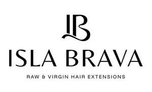

Trade Mark Journal No.2026/010 6 March 2026
UK00004341191 16 February 2026 (3,8,10,11,21,26,35,44)

- Class 3
- Hair shampoos; Hair styling lotions; Hair texturizers; Hair relaxers; Hair mascara; Hair shampoo; Hair colourants; Hair pomades; Hair lighteners; Hair conditioners; Hair serums; Hair styling gels; Styling gels for the hair; Hair styling waxes; Hair cosmetics; Hair styling gel; Hair moisturizers; Hair colorants; Hair lotions; Dyes for the hair; Hair dyes; Styling sprays for the hair; Hair mousses; Hair conditioner; Tints for the hair; Hair creams; Hair permanent treatments; Hair mousse; Hair moisturisers; Mousses being hair styling aids; Hair emollients; Hair dye; Hair styling preparations; Hair gels; Hair balms; Hair lacquers; Styling paste for hair; Hair straightening preparations; Hair bleaches; Hair sprays; Hair gel; Hair lotion; Hair styling spray; Hair tonics; Hair oils; Shampoos for human hair; Mousses [toiletries] for use in styling the hair; Hair conditioner bars; Cosmetic preparations for the hair and scalp; Hair masks; Wax treatments for the hair; Hair rinses; Hair color; Hair nourishers; Hair rinses [for cosmetic use]; Hair bleach; Hair moisturising conditioners; Hair protection mousse; Hair wax.
- Class 8
- Hair clippers; Hair straightening irons; Hair styling appliances; Electric irons for styling hair; Electric hair straighteners; Electric hair straightening irons.
- Class 10
- Hair prostheses.
- Class 11
- Dryers (Hair -); Hair dryers; Driers (Hair -); Hair driers; Hair driers for use in beauty salons.
- Class 21
- Combs for back-combing hair; Hair combs; Hair brushes; Hair for brushes; Electric hair combs; Hair tinting brushes; Hair color application brushes; Combs for the hair (Large-toothed -); Large-toothed combs for the hair; Wide tooth combs for hair.
- Class 26
- Hair extensions; Hair ornaments, hair rollers, hair fastening articles, and false hair; Hair (Tresses of -); Hair tresses; Tresses of hair; Hair barrettes; Hair twisters [hair accessories]; Plaits of hair; Hair elastics; Hair scrunchies; Hair tassel strings for Japanese hair styling (motoyui); Plaited hair; Hair (Plaited -); Hair curlers; Hair curl clips; Hair clips; Hair ribbons for Japanese hair styling (tegara); Hair ornaments in the nature of hair wraps; Hair tassel ornaments for Japanese hair styling (negake); Bows for the hair; Hair bows; Sticks for use in styling the hair; Hair fasteners; Hairpieces for Japanese hair styling (kamishin); Hairpieces for Japanese hair styling [kamishin]; Hair ribbons; Ribbons for the hair; Synthetic hair; Fibres for use as replacement hair; Hair weaves; Hair wraps; Tabodome [hair pins for fixing back-hairpieces for use in Japanese hair styling]; Ornamental hair pins for Japanese hair styling (kogai); Hair rollers; Ponytail holders and hair ribbons; Hair buckles; Hair pins; Pins for the hair; Ornaments (Hair -); Ornaments for the hair; Hair ornaments; Hair pieces; Ornamental combs for Japanese hair styling (marugushi); Hair slides; Hair curling pins; Grips for the hair; Hair ornaments in the form of combs; Hair decorations; Toupees [false hair].
- Class 35
- Retail services in relation to hair products.
- Class 44
- Hair extension services; Hair styling; Hair perming services; Hair braiding services; Hair straightening services; Shampooing of the hair; Hair styling services; Hair replacement; Hair salon services; Hair curling services; Hair dressing salon services; Hair restoration; Hair treatment; Hair dyeing services.
ISLA BRAVA HAIR LTD